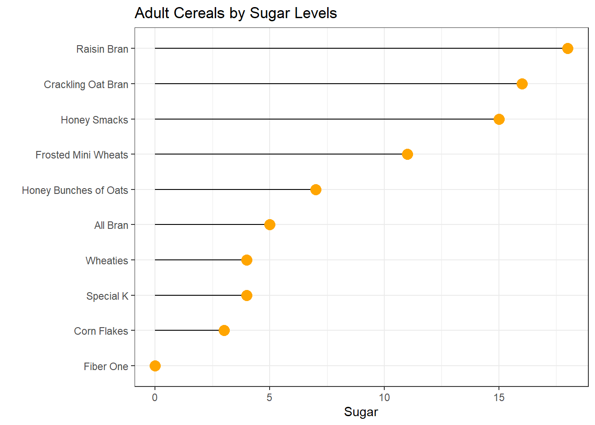
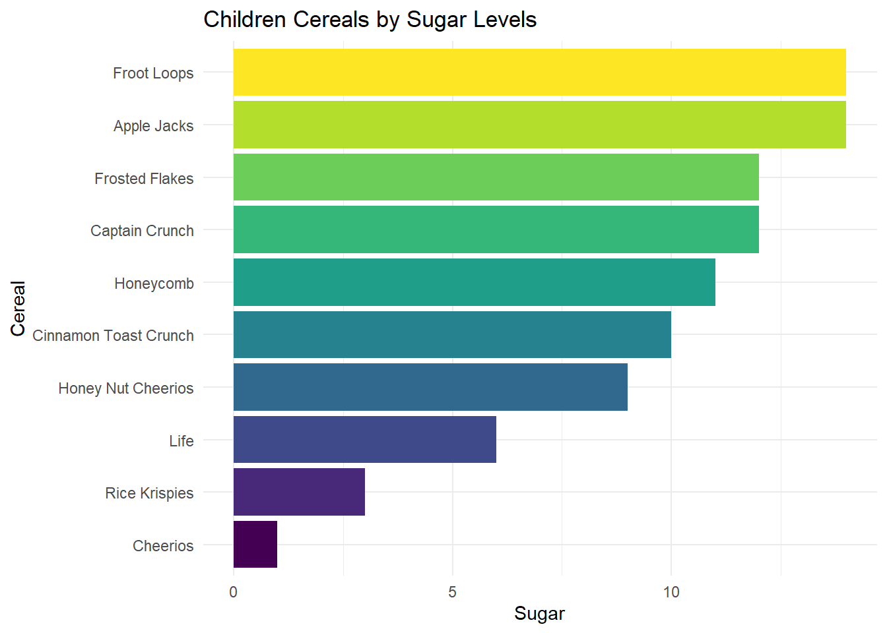

Code
library(tidyverse)
library(ggplot2)
library(dplyr)
library(viridisLite)
knitr::opts_chunk$set(echo = TRUE, warning=FALSE, message=FALSE)library(tidyverse)
library(ggplot2)
library(dplyr)
library(viridisLite)
knitr::opts_chunk$set(echo = TRUE, warning=FALSE, message=FALSE)Today’s challenge is to:
Read in one (or more) of the following datasets, using the correct R package and command.
cereal<- read_csv("_data/cereal.csv")
cereal# A tibble: 20 × 4
Cereal Sodium Sugar Type
<chr> <dbl> <dbl> <chr>
1 Frosted Mini Wheats 0 11 A
2 Raisin Bran 340 18 A
3 All Bran 70 5 A
4 Apple Jacks 140 14 C
5 Captain Crunch 200 12 C
6 Cheerios 180 1 C
7 Cinnamon Toast Crunch 210 10 C
8 Crackling Oat Bran 150 16 A
9 Fiber One 100 0 A
10 Frosted Flakes 130 12 C
11 Froot Loops 140 14 C
12 Honey Bunches of Oats 180 7 A
13 Honey Nut Cheerios 190 9 C
14 Life 160 6 C
15 Rice Krispies 290 3 C
16 Honey Smacks 50 15 A
17 Special K 220 4 A
18 Wheaties 180 4 A
19 Corn Flakes 200 3 A
20 Honeycomb 210 11 C This dataset has 20 rows and 4 column. It includes 20 types of cereal with detailed amount of sodium, sugar and type (A or C). The type is either child or adult.
This dataset is relatively tidy. We can sort this by sugar levels. I also converted Sodium in milligrams to grams so that we can compare it to Sugar.
by_sugar <-cereal %>%
arrange(desc(Sugar)) %>%
mutate(Sodium = Sodium/1000)
by_sugar# A tibble: 20 × 4
Cereal Sodium Sugar Type
<chr> <dbl> <dbl> <chr>
1 Raisin Bran 0.34 18 A
2 Crackling Oat Bran 0.15 16 A
3 Honey Smacks 0.05 15 A
4 Apple Jacks 0.14 14 C
5 Froot Loops 0.14 14 C
6 Captain Crunch 0.2 12 C
7 Frosted Flakes 0.13 12 C
8 Frosted Mini Wheats 0 11 A
9 Honeycomb 0.21 11 C
10 Cinnamon Toast Crunch 0.21 10 C
11 Honey Nut Cheerios 0.19 9 C
12 Honey Bunches of Oats 0.18 7 A
13 Life 0.16 6 C
14 All Bran 0.07 5 A
15 Special K 0.22 4 A
16 Wheaties 0.18 4 A
17 Rice Krispies 0.29 3 C
18 Corn Flakes 0.2 3 A
19 Cheerios 0.18 1 C
20 Fiber One 0.1 0 A I also pivoted the data longer so that I could eventially create a stacked graph of sodium and sugar in one bar graph.
cereal_new<- pivot_longer(by_sugar, col = c("Sodium","Sugar"),
names_to="Ingredient",
values_to = "Amount")
cereal_new# A tibble: 40 × 4
Cereal Type Ingredient Amount
<chr> <chr> <chr> <dbl>
1 Raisin Bran A Sodium 0.34
2 Raisin Bran A Sugar 18
3 Crackling Oat Bran A Sodium 0.15
4 Crackling Oat Bran A Sugar 16
5 Honey Smacks A Sodium 0.05
6 Honey Smacks A Sugar 15
7 Apple Jacks C Sodium 0.14
8 Apple Jacks C Sugar 14
9 Froot Loops C Sodium 0.14
10 Froot Loops C Sugar 14
# … with 30 more rowsUsing cereal data, we can look at the amount of sugar in each cereal, separating by type (adult or child).
by_sugar %>%
filter(Type== "A") %>%
arrange(Sugar) %>%
mutate(Cereal=factor(Cereal, levels=Cereal)) %>%
ggplot( aes(x=Cereal, y=Sugar)) +
geom_segment( aes(xend=Cereal, yend=0)) +
geom_point( size=4, color="orange") +
coord_flip() +
theme_bw() +
xlab("")+
ggtitle("Adult Cereals by Sugar Levels")
# Barplot
by_sugar %>%
filter(Type== "C") %>%
arrange(Sugar) %>%
mutate(Cereal=factor(Cereal, levels=Cereal)) %>%
ggplot( aes(x=Cereal, y=Sugar)) +
geom_bar(stat = "identity", fill = viridis(10)) +
theme_minimal() +
coord_flip() +
ggtitle("Children Cereals by Sugar Levels")
Next, I want to see the amount of ingredients in each children’s cereal. I first had to convert Sodium in mg to grams so that units of measurement are consistent.
cereal_new %>%
filter(Type== "C") %>%
mutate(Cereal = fct_reorder(Cereal, desc(Amount))) %>%
ggplot(aes(fill=Ingredient, y= Amount, x=Cereal), ) +
geom_bar(position="stack", stat="identity")+
theme(axis.text.x = element_text(angle = 90)) +
ggtitle("Children Cereals with Sodium and Sugar Amounts")
Any additional comments?
As you can see from the chart, the makeup of Apple Jacks and Froot Loops are identical. Cheerios could be considered the most healthy with the lowest amount of sugar and sodium.